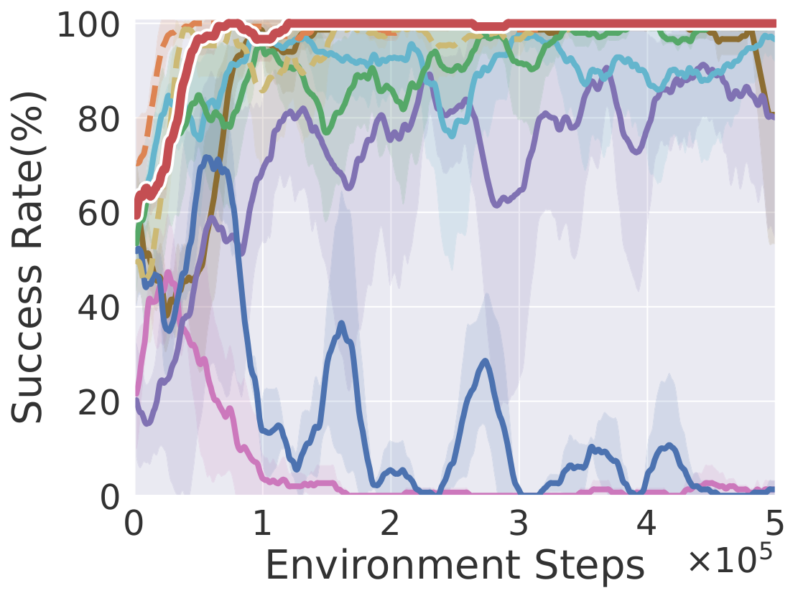
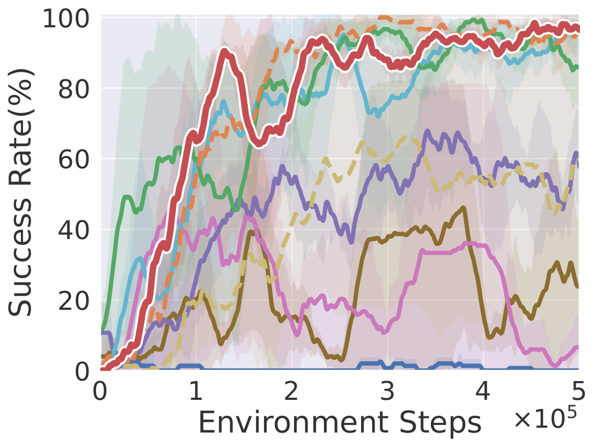
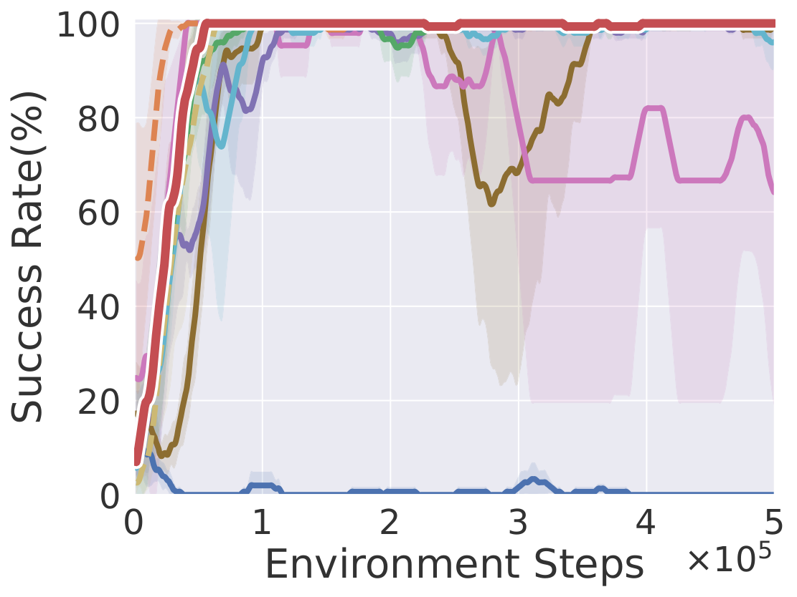
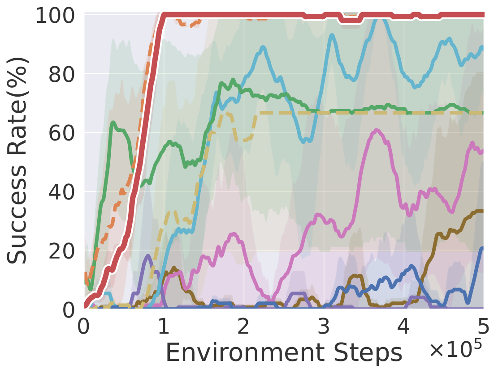
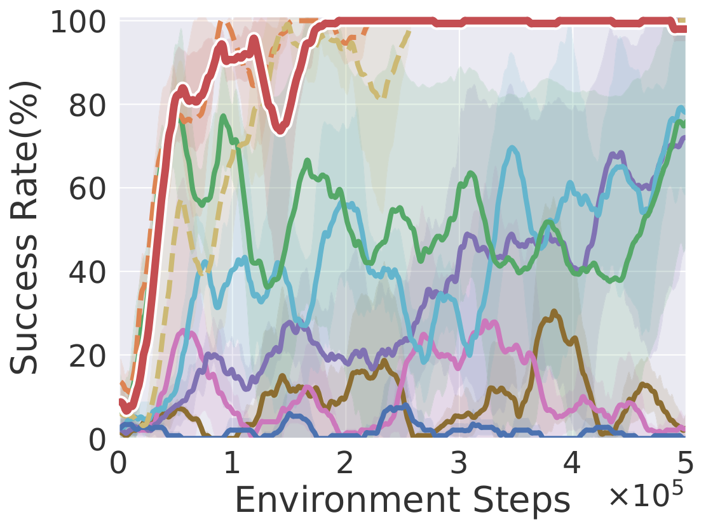
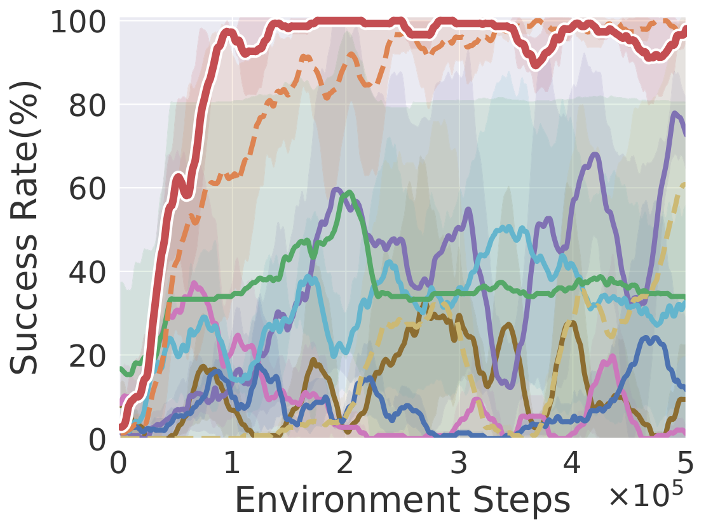
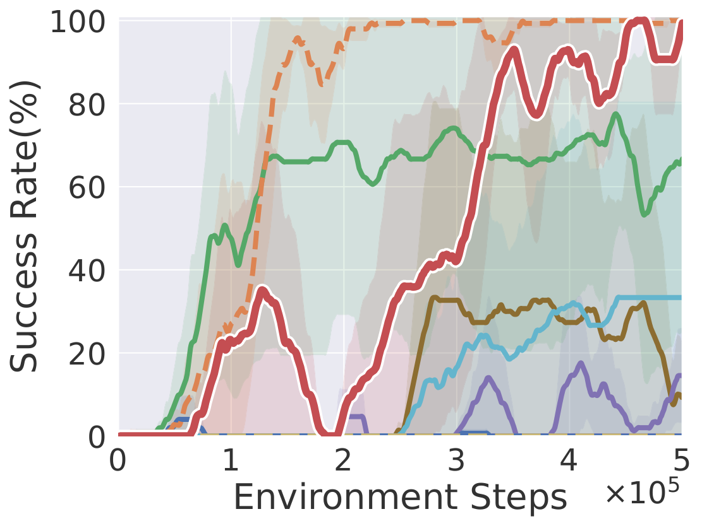
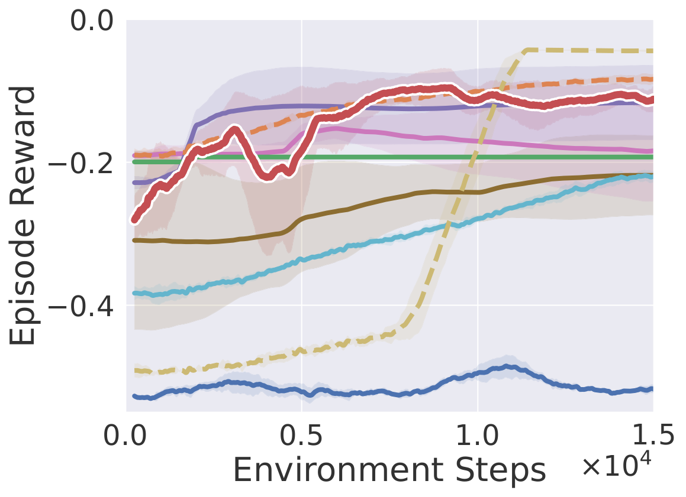
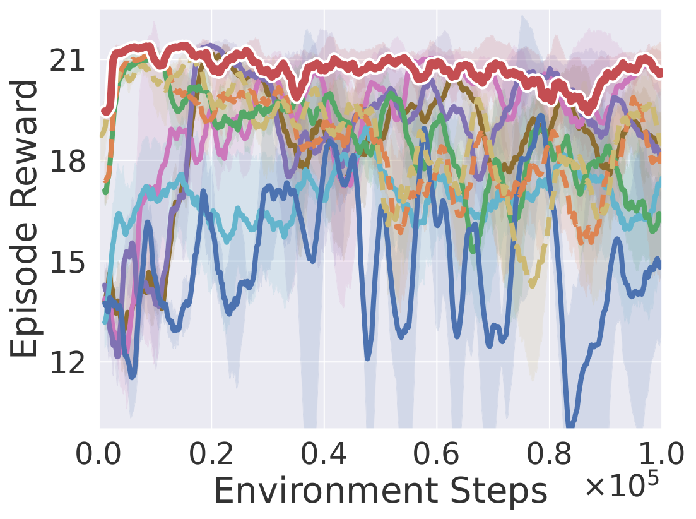
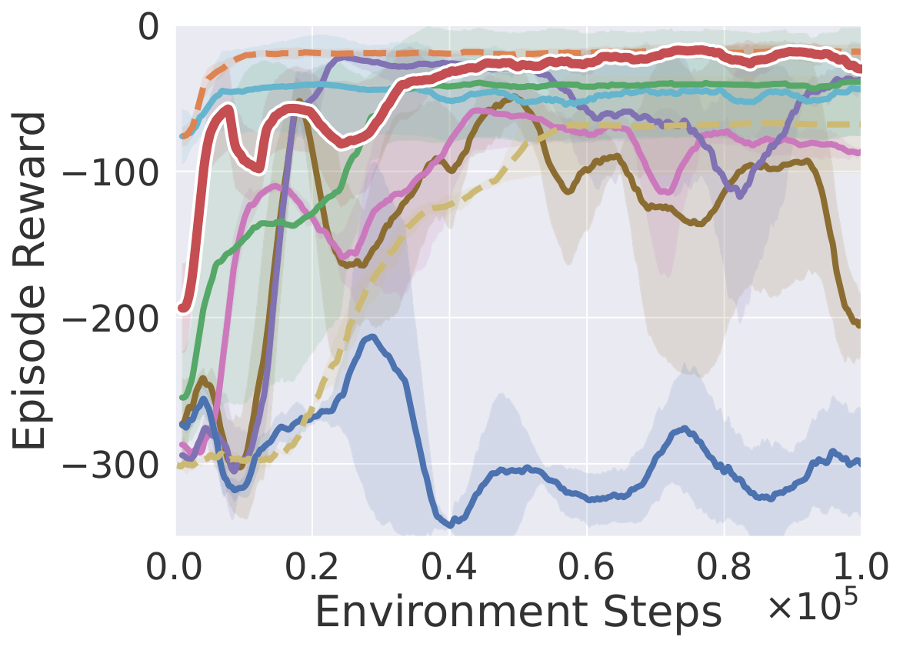

CoRe decomposes the task reward into a Formal Reward Module (FRM) and a Residual Reward Module (RRM). FRM leverages LLMs together with VLM-based preferences to iteratively generate and refine code-based rewards; RRM incorporates video-level preferences and state-importance from VLMs to complement FRM and ensure alignment with human intent.
Abstract
Reward design remains a central challenge in reinforcement learning (RL). Hand-crafted rewards are often difficult to specify and may lead to suboptimal policies, while learned rewards from preferences can suffer from inefficiency and unstable training. Inspired by the dual nature of human learning explored in cognitive science, we decompose rewards into two complementary components: Formal Rewards (FR), explicitly designed based on task knowledge, and Residual Rewards (RR), learned from observations to capture implicit and nuanced preferences. Based on this decomposition, we propose CoRe, a hybrid framework that integrates FR and RR with vision-language models (VLMs) feedback to achieve preference-aligned policies without human involvement. Our contributions are twofold: (1) We propose a Formal Reward Module (FRM) that leverages VLMs to iteratively design and optimize FR based on task knowledge and preference feedback, enabling the continual improvement of policy during training; (2) We introduce a Residual Reward Module (RRM) that learns RR from video-level preference by employing VLMs to generate preference labels and capturing nuanced rewards that complement FR, ensuring alignment with human intent. Through the synergy of FRM and RRM, CoRe enables the automatic construction of reliable rewards that are efficient and preference-aligned. Extensive experiments demonstrate that CoRe outperforms existing approaches in terms of policy learning effectiveness and efficiency on ten robotic manipulation tasks in simulation and five real-world tasks.
Experiments
Simulation Experiments
We evaluate CoRe on 10 simulation tasks: seven from MetaWorld (Soccer, Sweep Into, Drawer Open, Button Press, Dial Turn, Hammer, Peg Insert) and three from SoftGym (Fold Cloth, Straighten Rope, Pass Water). MetaWorld tasks are measured by success rate (%); SoftGym tasks by episode reward.
Videos
Soccer
Sweep Into
Drawer Open
Button Press
Dial Turn
Hammer
Peg Insert
Fold Cloth
Straighten Rope
Pass Water
Task Description
| Task Name | Task Description |
|---|---|
| Soccer | Move the soccer ball into the goal. |
| Sweep Into | Minimize the distance between the green cube and the hole. |
| Drawer Open | Open the drawer. |
| Button Press | Press the red button down completely from top to bottom. |
| Dial Turn | Turn the red line to the bottom of the dial. |
| Hammer | Hammer the grey nail completely in with a red hammer. |
| Peg Insert | Insert the green peg into the hole of the red block. |
| Fold Cloth | Fold the cloth diagonally from the top left corner to the bottom right corner. |
| Straighten Rope | Straighten the blue rope. |
| Pass Water | Move the container, which holds water, to be as close to the red circle as possible without causing too many water droplets to spill. |
Results
| Method | Success Rate (%) | Episode Reward | ||||||||
|---|---|---|---|---|---|---|---|---|---|---|
| Soccer | Sweep Into | Drawer Open | Button Press | Dial Turn | Hammer | Peg Insert | Fold Cloth | Straighten Rope | Pass Water | |
| Env Sparse | 100.0 | 60.0 | 100.0 | 66.7 | 100.0 | 60.7 | 0.0 | −0.04 | 18.6 | −67.9 |
| Env Dense | 100.0 | 98.0 | 100.0 | 100.0 | 100.0 | 97.3 | 100.0 | −0.08 | 18.1 | −18.3 |
| CLIP Score | 1.3 | 0.0 | 0.0 | 20.7 | 0.0 | 11.3 | 0.0 | −0.52 | 15.0 | −299.4 |
| Eureka | 100.0 | 86.0 | 100.0 | 66.7 | 76.0 | 33.3 | 66.7 | −0.19 | 16.2 | −38.8 |
| Text2Reward | 96.7 | 96.0 | 96.0 | 88.0 | 78.0 | 32.0 | 33.3 | −0.22 | 17.4 | −43.7 |
| RL-VLM-F | 80.0 | 58.0 | 100.0 | 0.0 | 72.0 | 72.7 | 14.7 | −0.12 | 17.9 | −36.4 |
| PrefVLM | 1.3 | 6.7 | 64.0 | 54.0 | 2.7 | 1.3 | 0.0 | −0.18 | 20.5 | −86.9 |
| ERL-VLM | 80.7 | 24.0 | 100.0 | 33.3 | 2.7 | 9.3 | 9.3 | −0.22 | 18.1 | −202.4 |
| CoRe (Ours) | 100.0 | 97.3 | 100.0 | 100.0 | 98.0 | 98.0 | 100.0 | −0.10 | 20.6 | −30.0 |
Comparison of final success rate (%) and episode reward across ten tasks. Bold values indicate best performance.
Learning Curves

Soccer

Sweep Into

Drawer Open

Button Press

Dial Turn

Hammer

Peg Insert

Fold Cloth

Straighten Rope

Pass Water
Learning curves on ten robotic manipulation tasks (success rate / episode reward). Solid lines and shaded regions denote mean and standard deviation over three seeds.